Installation¶
Welcome to QED — a modern, Kotlin-based test automation framework designed for clarity, composability, and speed. This guide walks you through setting up QED from scratch.
Architecture Overview¶
QED uses a multi-repository architecture:
- qed-framework — the public, reusable test framework (includes
qed-demos/as a working example) - SUT repositories — private repos for each System Under Test, each depending on the framework via Gradle composite builds
All repos are designed to sit as siblings on disk:
C:\QEDFramework\
├── qed-framework\ ← the framework
├── qed-demos\ ← demo test suites (inside the framework repo)
├── QED-Shared\ ← shared data classes
├── qed-sut-myapp\ ← your private SUT repo
└── qed-sut-myapp-rest\ ← your private REST SUT repo
Prerequisites¶
Before you begin, make sure your system has:
Java JDK 22+ — Install from Amazon Corretto or your preferred vendor. Check that JAVA_HOME is set to the correct directory in environment variables.
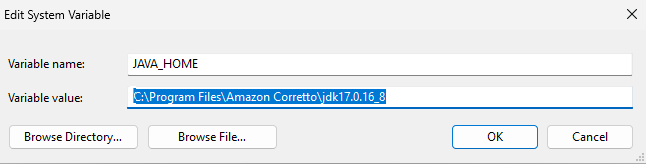
IntelliJ IDEA (Community Edition is fine) — Download from JetBrains. Create the associations with .kt, .gradle, .java, .kts if you want these files to load automatically in IntelliJ.
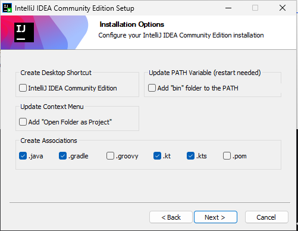
Git — For cloning the repository (use all the default options).
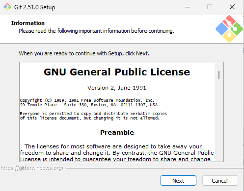
Check in a CLI that Java and Git have been installed:
java -version
git --version
Step 1: Clone the QED Framework¶
If GitHub asks for credentials, follow the prompts and enter the credentials that were given.
git clone https://github.com/AneVisser/qed-framework.git QEDFramework
cd QEDFramework
Step 2: Open the Framework in IntelliJ¶
Launch IntelliJ IDEA.
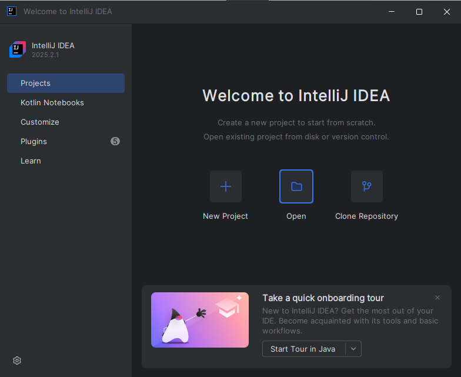
Select Open and choose the QEDFramework directory. Click Trust Project when prompted.
In File → Settings → Appearance you can choose a theme to your preference. In this documentation, the theme "Light" is chosen.
IntelliJ will detect the Gradle project and begin indexing. If it does not start automatically, go to the right-hand toolbar, click the Gradle button (1), and then the Sync button (2).
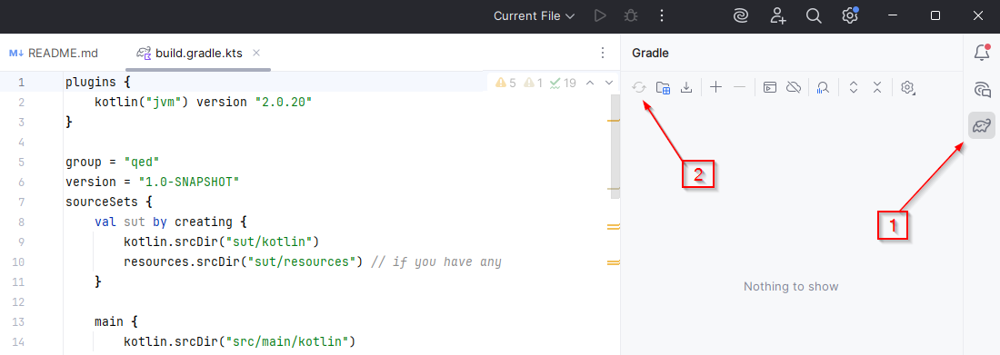
A successful sync results in a clean build with no errors:
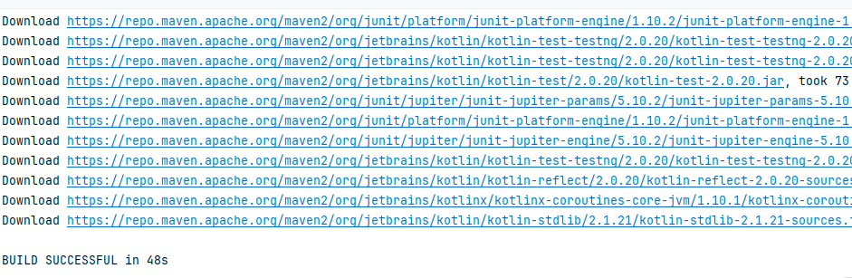
Step 3: Configure Java and Gradle¶
Set the Project SDK: Go to File → Project Structure → Project and set the SDK to Java 22.
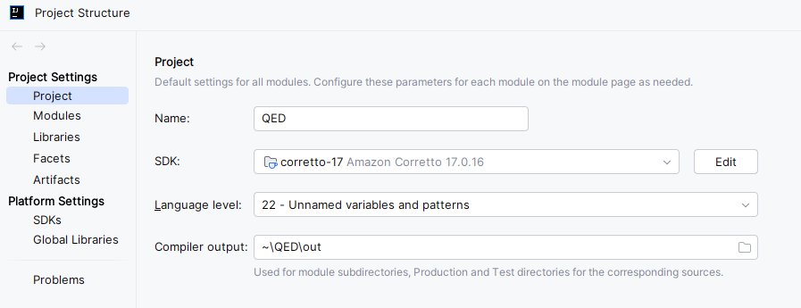
Gradle Settings: Go to File → Settings → Build, Execution, Deployment → Build Tools → Gradle and confirm:
- Use Gradle from: Gradle wrapper
- Gradle JVM: Java 22
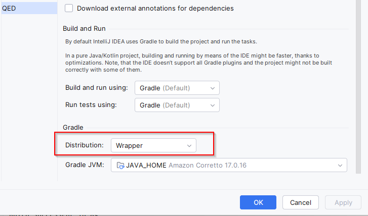
Step 4: Add Gradle Projects for Test Suites¶
The framework comes with qed-demos — a set of demo test suites. To run them, import the demos module into the Gradle tool window:
- Open the Gradle tool window (right panel)
- Click the + button (Attach Gradle Project)
- Navigate to
qed-demos/build.gradle.ktsand select it - IntelliJ will import it as a proper Gradle module alongside the framework
When you create your own SUT repo later, follow the same steps to import it.
Step 5: Build the Framework¶
In the IntelliJ terminal (View → Tool Windows → Terminal):
gradlew clean build
Step 6: Run a Demo Test¶
QED includes demo SUTs to help you validate your setup. The demos live inside the framework repository in the qed-demos/ directory.
The demos project is a separate Gradle project that uses a composite build to depend on the framework. Open it as a separate IntelliJ project:
- Go to
File → Open - Browse to
QEDFramework\qed-demos\ - Choose New Window when prompted
- Wait for Gradle sync to complete
Now set up a run configuration. In the top bar, click on Current File and select Edit Configurations.
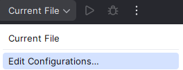
Click the + in the top-left corner of the dialog and select Gradle.
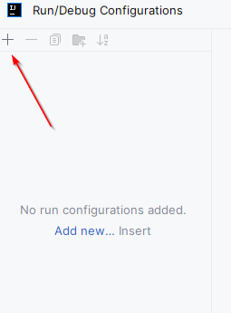
Set the configuration as follows:
- Run:
clean test -Ptestsuite=uitestingplayground -Penvironment=dev - Gradle project:
C:\QEDFramework\qed-demos
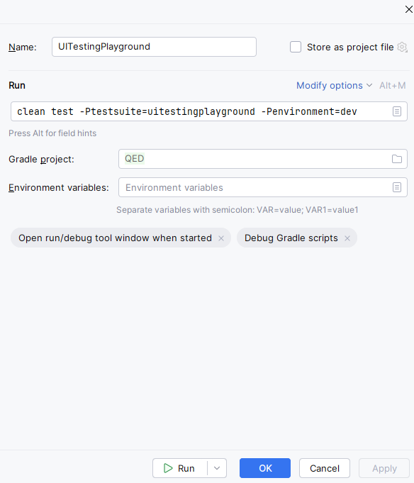
Click the Run button in the dialog, or click OK and launch from the top bar. The arrow button launches the suite; the bug button does the same but enables debugging.
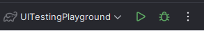
The Run panel in IntelliJ will show the tests running. The first run is slower than usual as Playwright downloads Chromium browser binaries.
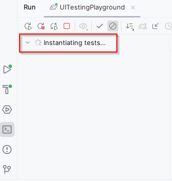
There will be one failure in the suite — this is intentional, to demonstrate how failures appear in the report.
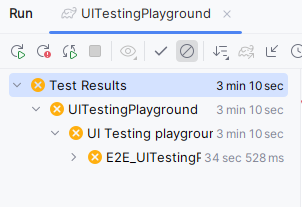
If you see the browser launch and the tests execute, you're good to go. When the tests have finished, navigate to the report:
build/test-output/ExtentReport/TestExecutionReport.html
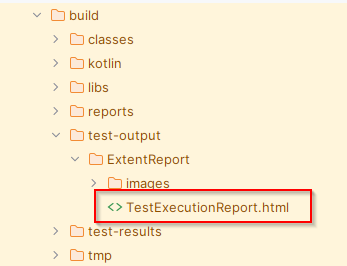
Right-click on it and select Open In → Browser → \<Favourite Browser>. If you can view a report that looks like this, you have successfully run the demo suite:
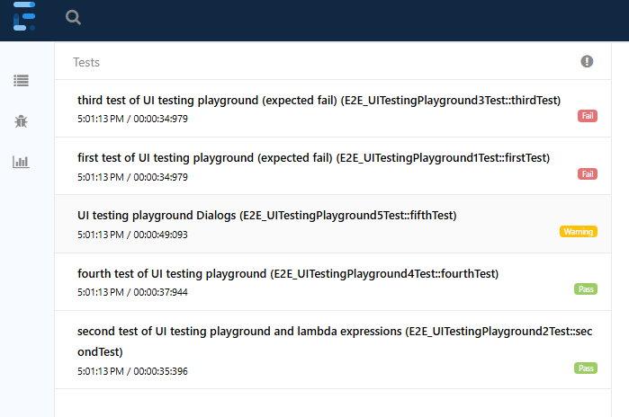
Available Demo Suites¶
Other demo suites can be run using the same configuration, changing the -Ptestsuite parameter:
| Suite | Run command |
|---|---|
| UI Testing Playground | clean test -Ptestsuite=uitestingplayground -Penvironment=dev |
| API Challenges | clean test -Ptestsuite=apichallenges -Penvironment=dev |
| Mixed UI/API | clean test -Ptestsuite=mixedUIAPI -Penvironment=dev |